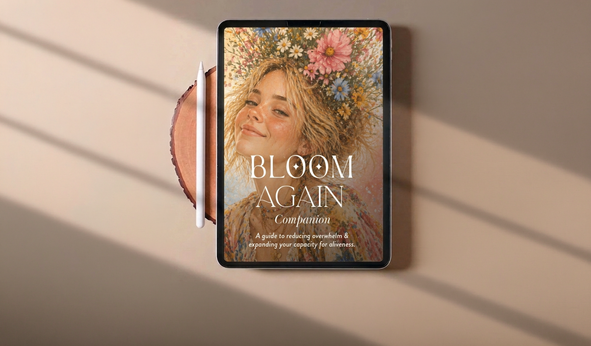
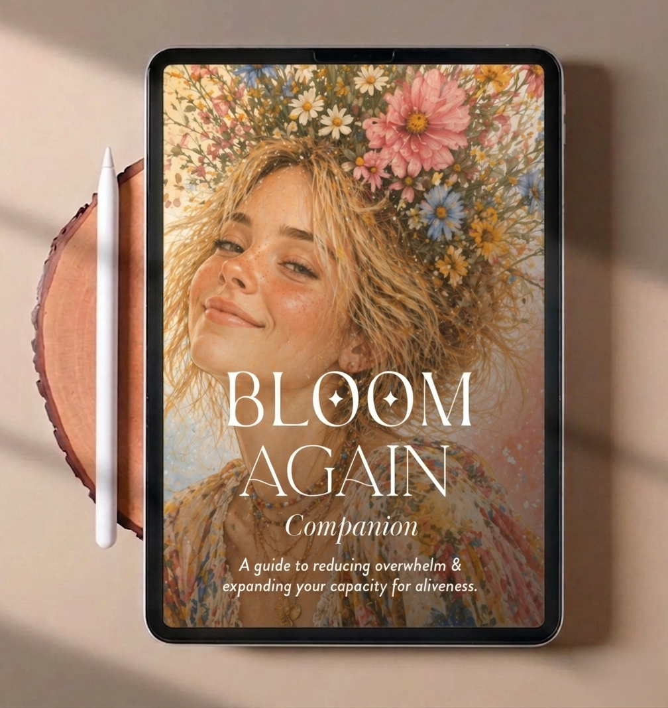
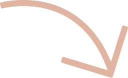
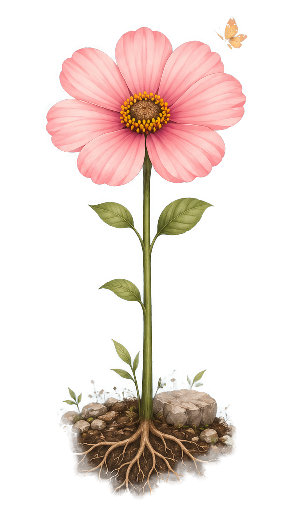

Hey, dear
I'm really glad you're here. If you found your way here from Instagram, thank you for trusting me enough to come along for this little journey.
This isn't about fixing yourself or learning to cope better with a life that doesn't fit. It's about getting curious about what actually helps you bloom, and what might need to change around you.
Dip in, skip things, come back whenever you want. There's nothing to complete here.
I hope you have a few little "ohhh... that explains a lot" moments along the way.
With love,
Mira 🌱
Enjoy the experience.


New here? Soil and roots are a gentle place to start.
"When a flower doesn't bloom, you fix the environment in which it grows, not the flower."
Alexander Den HeijerStart with the Environment chapter and move your way up to Expansion.
When your system is depleted, don't ask it to do more.
Reduce what is draining you.
Increase what is sustaining you.
Less noise. Less input. Less explaining. Less performing. Less deciding.
More food. More fluids. More sleep. More darkness. More quiet. More support.
You don't have to become functional today.
You need to create the conditions in which your body can begin to recover.
For the next 24 to 72 hours, your job is not to fix your life.